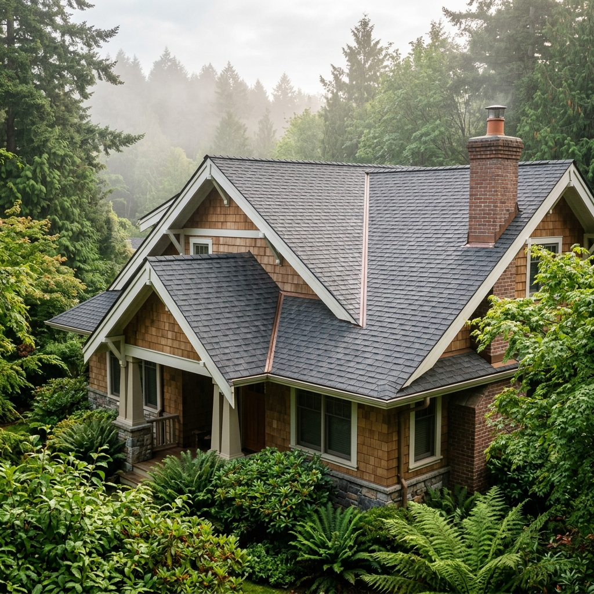

Providing the residents of Sidney with professional, eco-safe roof rejuvenation and moss treatment. Safe for your family, your pets, and the Sidney environment.

In Sidney, we understand the unique coastal climate that leads to heavy moss growth. Our organic treatment is specifically designed for Vancouver Island roofs.
Our team is active in Sidney this week. Book your free inspection now.
Fill out the form below and our Sidney area specialist will get back to you within 24 hours.